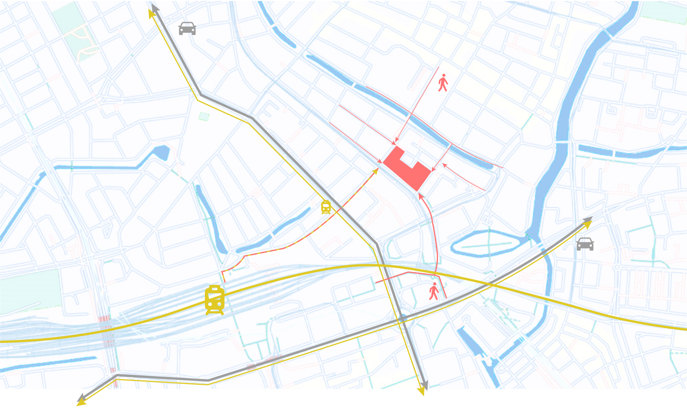

Figures
Figures from A1_Planning_process



Figures from A1_Planning_product
Figures from A2_Planning_process: Voxelsize determination


Figures from A2_Planning_process: Space criteria
Figures from A2_Planning_process: Voxelization


Figures from A3_Massing_process: ABM


Figures from A3_Massing_process: Designing the lattice


Figures from A3_Massing_process: Intro
Figures from A3_Massing_process: shafts and corridors


Figures from A3_Massing_process: spatial analysis


Figures from A3_Massing_process: product
Figures from A4_Forming_process


Figures from A4_Forming_product